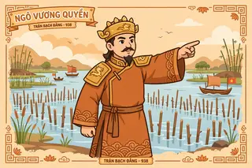
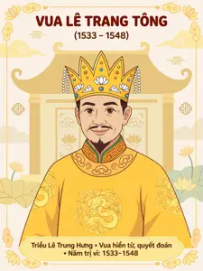
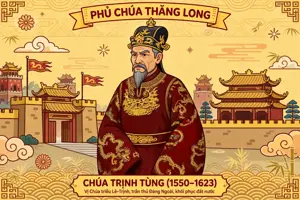
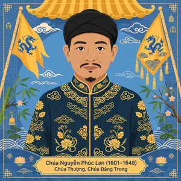

Hai Bà Trưng 2 nhân vật
Hai chị em Trưng Trắc – Trưng Nhị phất cờ khởi nghĩa, mở đầu kỷ nguyên độc lập.
Giành độc lập sớm 8 nhân vật
Từ Bà Triệu đến Ngô Quyền: các anh hùng giữ vững nền tự chủ trước phong kiến phương Bắc.
Bà Triệu
Khởi nghĩa: 248
Nữ anh hùng chống quân Ngô
Lý Nam Đế
Trị vì: 544–548
Người lập nước Vạn Xuân
Triệu Việt Vương
Trị vì: 548–571
Dạ Trạch Vương anh hùng
Mai Hắc Đế
Xưng đế: 722–723
Vị vua áo vải chống Đường
Phùng Hưng
Làm chủ Giao Châu: 791–800
Bố Cái Đại Vương
Khúc Thừa Dụ
Tiết độ sứ: 905–907
Người mở đầu thời tự chủ
Dương Đình Nghệ
Tiết độ sứ: 931–937
Người nối chí họ Khúc

Ngô Quyền
Xưng vương: 939–944
Người hùng Bạch Đằng
Nhà Đinh 2 nhân vật
Đinh Tiên Hoàng dẹp loạn 12 sứ quân, đặt quốc hiệu Đại Cồ Việt.
Nhà Tiền Lê 3 nhân vật
Lê Đại Hành phá Tống bình Chiêm, mở đầu thế kỷ độc lập vững chắc.
Nhà Lý 9 nhân vật
Dời đô về Thăng Long, dựng Văn Miếu, ba lần đánh thắng quân Tống.
Lý Thái Tổ
Trị vì: 1009–1028
Người dời đô Thăng Long
Lý Thái Tông
Trị vì: 1028–1054
Vị vua khai sáng
Lý Thánh Tông
Trị vì: 1054–1072
Người đặt tên Đại Việt
Lý Nhân Tông
Trị vì: 1072–1127
Vị vua trị vì lâu nhất
Lý Thần Tông
Trị vì: 1128–1138
Vị vua nhân từ
Lý Anh Tông
Trị vì: 1138–1175
Vị vua giữ nghiệp
Lý Cao Tông
Trị vì: 1175–1210
Vị vua làm suy triều Lý
Lý Huệ Tông
Trị vì: 1210–1224
Vị vua cuối nhà Lý
Lý Chiêu Hoàng
Trị vì: 1224–1225
Nữ hoàng duy nhất
Nhà Trần 12 nhân vật
Ba lần đại thắng quân Nguyên – Mông, hào khí Đông A rực rỡ.
Trần Thái Tông
Trị vì: 1225–1258
Người mở đầu ba lần thắng Mông
Trần Thánh Tông
Trị vì: 1258–1278
Người chuẩn bị đại thắng
Trần Nhân Tông
Trị vì: 1278–1293
Phật hoàng anh hùng
Trần Anh Tông
Trị vì: 1293–1314
Vị vua thời bình
Trần Minh Tông
Trị vì: 1314–1329
Vị vua hiền đức
Trần Hiến Tông
Trị vì: 1329–1341
Vị vua nhỏ tuổi
Trần Dụ Tông
Trị vì: 1341–1369
Vị vua làm suy nhà Trần
Trần Nghệ Tông
Trị vì: 1370–1372
Người cố vực dậy nhà Trần
Trần Duệ Tông
Trị vì: 1372–1377
Vị vua tử trận
Trần Phế Đế
Trị vì: 1377–1388
Vị vua bị phế
Trần Thuận Tông
Trị vì: 1388–1398
Vị vua bù nhìn
Trần Thiếu Đế
Trị vì: 1398–1400
Vị vua cuối nhà Trần
Nhà Hồ 2 nhân vật
Hồ Quý Ly cải cách táo bạo: tiền giấy, đo đạc ruộng đất, chấn hưng giáo dục.
Nhà Lê Sơ 11 nhân vật
Lê Lợi khởi nghĩa Lam Sơn, triều đại đưa Đại Việt lên đỉnh cao thịnh trị.
Lê Thái Tổ
Trị vì: 1428–1433
Người hùng Lam Sơn
Lê Thái Tông
Trị vì: 1433–1442
Vị vua trẻ tài năng
Lê Nhân Tông
Trị vì: 1442–1459
Vị vua nhỏ tuổi

Lê Nghi Dân
Trị vì: 1459–1460
Vị vua 8 tháng
Lê Thánh Tông
Trị vì: 1460–1497
Vị vua thánh đức
Lê Hiến Tông
Trị vì: 1497–1504
Người giữ nghiệp thịnh
Lê Túc Tông
Trị vì: 1504 (6 tháng)
Vị vua đoản mệnh
Lê Uy Mục
Trị vì: 1504–1509
Vị vua bạo ngược
Lê Tương Dực
Trị vì: 1509–1516
Người lật đổ vua quỷ
Lê Chiêu Tông
Trị vì: 1516–1522
Vị vua bù nhìn cuối
Lê Cung Hoàng
Trị vì: 1522–1527
Vị vua cuối Lê Sơ
Nhà Mạc 5 nhân vật
Mạc Đăng Dung lập triều đại mới, giữ vững đất nước hơn 60 năm.
Lê Trung Hưng 9 nhân vật
Nhà Lê trung hưng: các vua Lê nối nhau trị vì bên cạnh quyền thần.

Lê Trang Tông
Trị vì: 1533–1548 (15 năm)
Vị vua mở đầu Lê Trung Hưng
Lê Anh Tông
Trị vì: 1556–1573 (16 năm)
Vị vua 16 năm giữa hai triều
Lê Thế Tông
Trị vì: 1573–1599 (26 năm)
Vị vua hoàn thành Trung Hưng
Lê Kính Tông
Trị vì: 1600–1619 (19 năm)
Vị vua 19 năm dưới bóng chúa Trịnh
Lê Thần Tông
Trị vì: 1619–1643 và 1649–1662 (38 năm)
Vị vua duy nhất hai lần lên ngôi
Lê Hy Tông
Trị vì: 1676–1705 (29 năm)
Vị vua đức độ bậc nhất Lê Trung hưng
Lê Dụ Tông
Trị vì: 1706–1729
Vị vua thời bình đầu thế kỉ XVIII
Lê Hiển Tông
Trị vì: 1740–1786
Vị vua ở ngôi lâu nhất Lê Trung Hưng
Lê Chiêu Thống
Trị vì: 1787–1789
Vị vua cuối cùng của nhà Lê
Chúa Trịnh 7 nhân vật
Các chúa Trịnh nắm thực quyền ở Đàng Ngoài suốt hơn 200 năm.
Trịnh Kiểm
Nắm quyền: 1545–1570
Chúa Trịnh đầu tiên

Trịnh Tùng
Nắm quyền: 1570–1623
Người thu lại Thăng Long
Trịnh Tráng
Nắm quyền: 1623–1657
Chúa Trịnh thời phân tranh
Trịnh Tạc
Nắm quyền: 1657–1682
Tây Định Vương
Trịnh Căn
Nắm quyền: 1682–1709
Định Nam Vương
Trịnh Cương
Nắm quyền: 1709–1729
An Đô Vương
Trịnh Sâm
Nắm quyền: 1767–1782
Vị chúa Trịnh văn võ toàn tài
Chúa Nguyễn 8 nhân vật
Các chúa Nguyễn mở cõi Đàng Trong, đặt nền móng cho đất phương Nam.
Nguyễn Hoàng
Nắm quyền: 1558–1613
Vị chúa Nguyễn đầu tiên
Nguyễn Phúc Nguyên
Nắm quyền: 1613–1635
Vị chúa Nguyễn thứ hai

Nguyễn Phúc Lan
Nắm quyền: 1635–1648
Chúa Thượng của Đàng Trong
Nguyễn Phúc Tần
Nắm quyền: 1648–1687
Chúa Hiền của Đàng Trong
Nguyễn Phúc Thái
Nắm quyền: 1687–1691
Chúa Nghĩa của Đàng Trong
Nguyễn Phúc Chu
Nắm quyền: năm 1691
Vị chúa mở đất phương Nam
Nguyễn Phúc Khoát
Nắm quyền: năm 1738
Vị chúa đầu tiên xưng Vương
Nguyễn Phúc Thuần
Nắm quyền: năm 1765
Vị chúa Nguyễn cuối cùng
Tây Sơn 4 nhân vật
Ba anh em Tây Sơn nổi dậy, Quang Trung đại thắng Đống Đa 1789.
Nhà Nguyễn 13 nhân vật
Triều đại phong kiến cuối cùng: thống nhất đất nước rồi đối mặt với thực dân Pháp.
Gia Long
Trị vì: 1802–1820
Vị vua sáng lập triều Nguyễn
Minh Mạng
Trị vì: 1820–1841
Vị vua cải cách
Thiệu Trị
Trị vì: 1841–1847
Vị vua thi sĩ
Tự Đức
Trị vì: 36 năm (1847–1883)
Vị vua trị vì lâu nhất triều Nguyễn
Dục Đức
Trị vì: 3 ngày
Vị vua 3 ngày
Hiệp Hòa
Trị vì: hơn 4 tháng
Vị vua của hiệp ước Harmand
Kiến Phúc
Trị vì: 8 tháng
Vị vua thiếu niên 15 tuổi
Hàm Nghi
Trị vì: 1884–1885
Vị vua yêu nước của Chiếu Cần Vương
Đồng Khánh
Trị vì: 1885–1889
Hoàng đế thứ 9 nhà Nguyễn
Thành Thái
Trị vì: 1889–1907
Vị vua yêu nước bị vu là điên
Duy Tân
Trị vì: 1907–1916
Vị vua trẻ chống Pháp
Khải Định
Trị vì: 1916–1925
Vị vua xây lăng Ứng Lăng
Bảo Đại
Trị vì: 1926–1945
Vị vua cuối cùng của Việt Nam
Chống Pháp 8 nhân vật
Các anh hùng khởi nghĩa chống thực dân Pháp khắp ba miền.
Trương Định
Khởi nghĩa: 1859–1864
Bình Tây đại nguyên soái
Nguyễn Trung Trực
Hoạt động: 1861–1868
Ngọn lửa Nhật Tảo
Hoàng Hoa Thám
Khởi nghĩa: 1884–1913
Hùm thiêng Yên Thế
Phan Đình Phùng
Khởi nghĩa: 1885–1896
Lãnh tụ khởi nghĩa Hương Khê
Phan Bội Châu
Hoạt động: 1904–1925
Người khởi xướng phong trào Đông Du
Phan Châu Trinh
Hoạt động: 1906–1925
Người khởi xướng phong trào Duy Tân
Nguyễn Thái Học
Khởi nghĩa: 1927–1930
Người lãnh đạo khởi nghĩa Yên Bái
Võ Thị Sáu
Hoạt động: 1947–1952
Nữ anh hùng Đất Đỏ
Việt Nam hiện đại 6 nhân vật
Các lãnh tụ và anh hùng của cách mạng Việt Nam hiện đại.
Hồ Chí Minh
Chủ tịch nước: 1945–1969
Vị Cha già kính yêu của dân tộc
Trần Đại Nghĩa
Chế tạo vũ khí: 1946–1997
Ông Phật làm súng
Võ Nguyên Giáp
Đại tướng: 1948–2013
Vị Đại tướng của Điện Biên Phủ
Phạm Văn Đồng
Thủ tướng: 1955–1987
Vị Thủ tướng 32 năm
Tôn Đức Thắng
Chủ tịch nước: 1969–1980
Bác Tôn — người thợ máy của dân tộc
Nguyễn Thị Định
Nữ tướng: 1974–1992
Nữ tướng của đội quân tóc dài
Không tìm thấy nhân vật nào khớp.